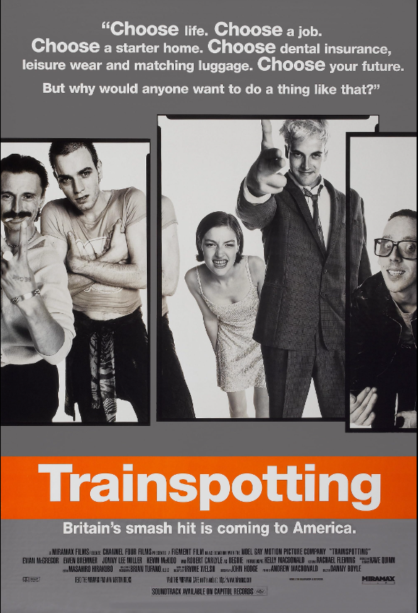

Renton, deeply immersed in the Edinburgh drug scene, tries to clean up and get out despite the allure of drugs and the influence of friends.
The Butterfly Effect

Evan Treborn suffers blackouts during significant events of his life. As he grows up, he finds a way to remember these lost memories and a supernatural way to alter his life by reading his journal.
The Matrix

When a beautiful stranger leads computer hacker Neo to a forbidding underworld, he discovers the shocking truth--the life he knows is the elaborate deception of an evil cyber-intelligence.